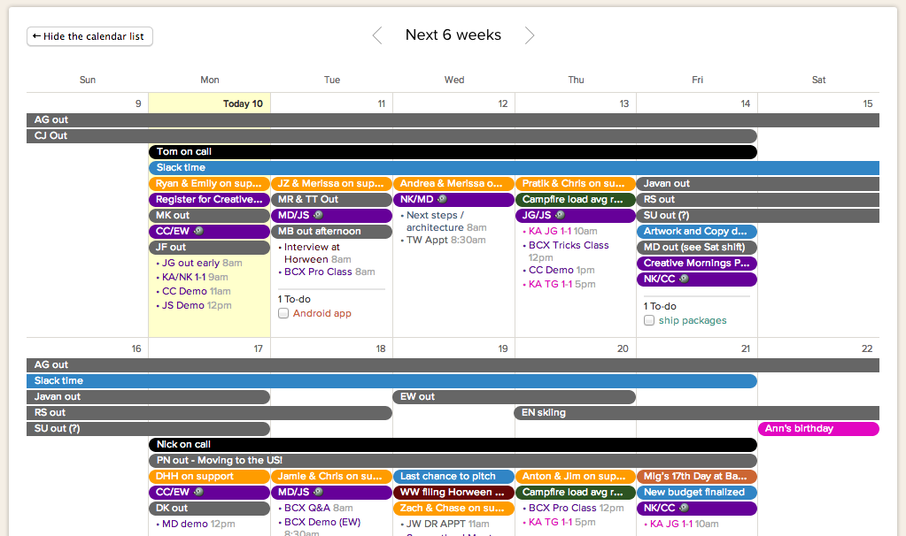
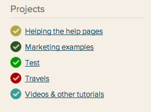
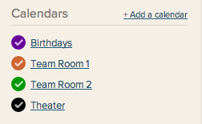
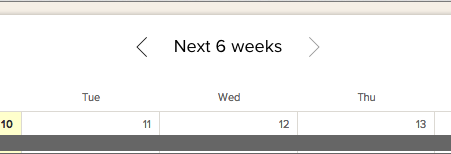
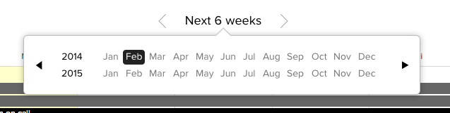
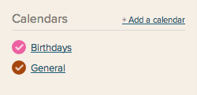
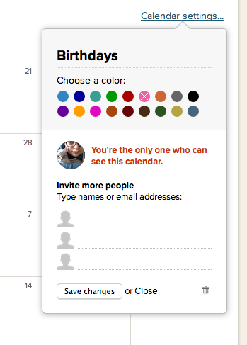

The Basecamp calendar keeps all your project dates, events, and deadlines in one place. It's fast and easy to navigate!

Two kinds of calendars
Basecamp calendars come in two flavors: project and stand-alone.
Project calendars contain all the events and dated to-dos in your projects.

Stand-alone calendars are a great place to put events that don't belong in a project: birthdays, holidays, days off, whatever!

Make sure others know what's up by sharing your calendars. Sharing is caring! (And it lets other users create events.)
To view only one calendar, click the calendar name. To hide a calendar from view, uncheck the box in front of the calendar name.
Basecamp will always display events in the time zone your system clock is set to. If you're seeing a strange time for a meeting, check your computer's clock.
Navigating your calendar
Use the arrows on either side of the calendar header to click back and forth between months.

To go forward by several months or years, click the "Next 6 Weeks" or month at the top. You can use the pop-up to travel backwards and forwards in time.

The calendar only displays six weeks at a time. Extended calendar views aren't supported, but you can pull your Basecamp calendar into an external calendar (like Outlook or Google Calendar) that will give you alternate views!
Calendar Settings
Click on the calendar name from the list on the left side. You'll see just that calendar.

Click Settings (on the right)to change the calendar name, color, share the calendar with other users or delete the calendar.
